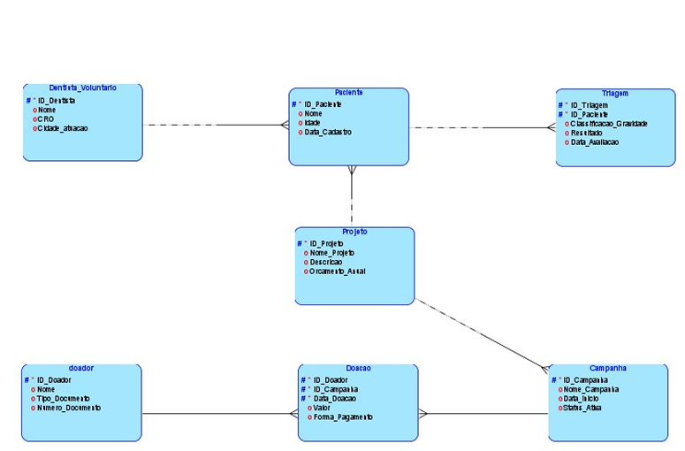

Sobre o Projeto
A nossa solução consiste no desenvolvimento de uma plataforma integrada de gestão para a Turma do Bem, organização que promove o acesso à saúde bucal. O objetivo é centralizar informações e conectar beneficiários, dentistas voluntários, doadores, colaboradores internos e campanhas em um único ambiente digital. A plataforma busca facilitar o gerenciamento de cadastros, necessidades, atendimentos e doações, tornando os processos mais organizados e eficientes. Além disso, contará com painéis de indicadores para acompanhar resultados e apoiar a tomada de decisões. Dessa forma, pretendemos contribuir para uma gestão mais transparente, automatizada e estratégica, ampliando a capacidade da organização de atender às necessidades identificadas.
Proposta 1
Banco de Dados

Sobre o Projeto
Além de centralizar informações, a plataforma pretende integrar os diferentes processos da Turma do Bem, permitindo que os dados cadastrados sejam utilizados para identificar demandas, acompanhar casos e orientar ações. O sistema poderá auxiliar no cruzamento entre as necessidades dos beneficiários e a disponibilidade de profissionais, considerando critérios como região, especialidade e capacidade de atendimento. Também será possível acompanhar indicadores de desempenho e impacto social, identificar prioridades e obter informações que apoiem o planejamento de campanhas e a captação de recursos. A solução prevê ainda recursos de comunicação e transparência para fortalecer o relacionamento com doadores e parceiros, respeitando as autorizações necessárias para o compartilhamento de informações. Com a evolução da plataforma, a automação e a inteligência artificial poderão contribuir para análises mais estratégicas, ajudando a organização a identificar oportunidades, otimizar recursos e aprimorar continuamente seus processos.